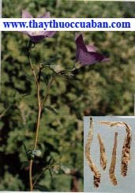

Tên khác:Vị thuốc cát cánh còn gọi là Tề ni (Bản Kinh) Bạch dược, Cánh thảo (Biệt Lục), Lợi như, Phù hổ, Lư như, Phương đồ, Phòng đồ (Ngô Phổ Bản Thảo), Khổ ngạch, (Bản Thảo Cương Mục), Mộc tiện, Khổ cánh, Cát tưởng xử, Đô ất la sất (Hòa Hán Dược Khảo).
Tên khoa học:
Platycodon grandiflorum (Jacq) ADC. var. glaucum Sieb. et Zucc.
Họ khoa học: Họ Hoa Chuông (Campanulaceae).
Cây Cát cánh
( Mô tả, hình ảnh, thu hái, chế biến, thành phần hoá học, tác dụng dược lý ....)
Mô tả:
Cây thảo sống lâu năm, thân cao 0,60-0,90m. Rễ củ nạc, màu vàng nhạt. Lá gần như không có cuống. Lá phía dưới hoặc mọc đối hoặc mọc vòng 3-4 lá. Phiến lá hình trứng, mép có răng cưa to. Lá phía trên nhỏ, có khi mọc cách.
Hoa mọc đơn độc hay thành bông thưa. Dài màu lục, hình chuông rộng, mép có 5 thùy. Tràng hình chuông màu xanh tím hay trắng. Quả hình trứng ngược. Có hoa từ tháng 5-8. Quả tháng 7-9.
Địa lý:
Cát cánh mọc hoang và được trồng nhiều nơi ở Trung Quốc, đang được nhập vào trong nước ta. Củ to, dài chắc màu trắng ngà.
Thu hái, sơ chế:
Mùa xuân hái mầm non luộc ăn, giữa tháng 2-8 đào rễ phơi khô, sấy khô.
Bộ phận dùng làm thuốc:
Rễ củ phơi hoặc sấy khô (Radix Platicodi).
Mô tả dược liệu:

Rễ Cát cánh khô hình gần như hình thoi, hơi cong, dài khoảng 6cm-19cm, đầu trên thô khoảng 12-22mm, bên ngoài gần màu trắng, hoặc màu vàng nhạt, có vết nhăn dọc sâu cong thắt, phần lồi ra hơi bóng mượt, phần trên hơi phình to, đầu trước cuống nhỏ dài, dài hơn 32mm, có đốt và vết mầm không hoàn chỉnh, thùy phân nhánh ở đỉnh, có vết thân, dễ bẻ gẫy, mặt cắt gần màu trắng hoặc màu vàng trắng. Từ giữa tâm có vân phóng xạ tỏa ra (Dược Tài Học).
Bào chế:

Dùng Cát cánh nên bỏ đầu cuống, gĩa chung với Bách hợp sống, gĩa nát như tương, ngâm nước 1 đêm xong sao khô (Lôi Công Bào Chích Luận).
Dùng Cát cánh cạo vỏ ngoài, tẩm nước gạo 1 đêm, xắt lát sao qua (Bản Thảo Cương Mục).
Hiện nay dùng củ đào về cắt bỏ thân mềm rửa sạch ủ một đêm, hôm sau sắc lát mỏng phơi khô dùng sống, có khi tẩm mật sao qua (Tùy theo đơn). Khi dùng làm hoàn tán thì nên xắt lát, sao qua rồi tán bột mịn (Trung Dược Đại Từ Điển).
Bảo quản:
Dễ mốc mọt nên để nơi khô ráo.
Thành phần hóa học:
Platycodin A, C, D (Konishi và cộng sự, Chem Pharm Bull 1978, 26 (2): 668)
Deapioplatycodin D, D3, 2”-O-Acetylplatycodin D2, 3”-O-Acetylplatycodin D2, Polygalacin D, D2, 2”-O-Acetylpolygalacin D, D2, 3”-O-Acetylpolygalacin D, D2, Methylplatyconate-A, Methyl 2-O- Methylplatyconate-A, Platiconic acid-A-Lactone (Ishii Hiroshi và cộng sự, Chem Soc, Perkin Trans I, 1984, (4): 661).
Polygalin acid, Platycodigenin, a-Spinasterol, a-Spinasteryl, b-D-Glucoside, Stigmasterol, Betulin, Platycodonin, Platycogenic acid, A, B, C, Glucose (Chinese Hebra Medicine).
Tác dụng dược lý:
Ảnh hưởng đối với hệ hô hấp: Cho chó và mèo đã gây mê uống nước sắc Cát cánh, thấy niêm mạc phế quản tăng tiết dịch rõ, chứng minh rằng Cát cánh có tác dụng long đờm mạnh (Chinese Hebra Medicine).
Tác dụng nội tiết: Nước sắc Cát cánh làm giảm đường huyết của thỏ,đặc biệt trong trường hợp gây tiểu đường nhân tạo, thuốc có tác dụng càng rõ (Chinese Hebra Medicine).
Tác dụng chuyển hóa Lipid: Trên thí nghiệm, cho chuột uống nước sắc Cát cánh, thấy có tác dụng chuyển hóa Cholesterol, giảm Cholesterol ở gan (Chinese Hebra Medicine).
Tác dụng chống nấm: Trong thí nghiệm, nước sắc cát cánh có tác dụng ức chế nhiều loại nấm da thông thường (Chinese Hebra Medicine).
Tác dụng đối với huyết học: Saponin Cát cánh có tác dụng tán huyết mạnh gấp 2 lần so với Saponin Viễn chí, nhưng khi dùng đường uống, thuốc bị dịch vị thủy phân nên không còn tác dụng tán huyết. Do đó không được dùng để chích (Chinese Hebra Medicine).
Saponin Cát cánh có tác dụng kháng viêm, an thần, gỉam đau, giải nhiệt, chống loét dạ dầy, ức chế miễn dịch (Trung Dược Học).
Vị thuốc Cát cánh
( Công dụng, Tính vị, quy kinh, liều dùng .... )
Tính vị:

Vị cay, tính hơi ôn (Bản Kinh).
Vị đắng, có ít độc (Biệt Lục).
Vị đắng, tính bình, không độc (Dược Tính Bản Thảo).
Vị đắng cay, tính hơi ấm (Trung Dược Học).
Qui kinh:
Vào kinh túc Thiếu âm Thận, thủ Thái âm Phế (Thang Dịch Bản Thảo).
Vào kinh túc Thái âm Tỳ, túc Thiếu âm Thận, túc Dương minh Vị (Bản Thảo Kinh Sơ).
Vào kinh phế (Trung Dược Học).
Tác dụng:
Lợi ngũ tạng, trường vị, bổ khí huyết, trừ hàn nhiệt, ôn trung, tiêu cốc, liệu hầu yết thống, hạ cổ độc (Biệt Lục).
Phá huyết, khứ tích khí, tiêu tích tụ đàm diên, trừ phúc trung lãnh thống (Dược tính Bản Thảo).
Khử đàm, chỉ khái, tuyên phế, bài nùng, đề phế khí (Trung Dược Học).
Tuyên thông Phế khí, tán tà, trừ đờm, tiêu nùng, dẫn thuốc đi lên (Đông Dược Học Thiết Yếu).
Chủ trị:
Trị tắc tiếng, khàn tiếng do họng sưng đau, ho nhiều đàm do ngoại cảm, phế ung (Trung Dược Học).
Trị ho do phong tà ở Phế, phế ung, nôn ra mủ máu, họng đau, ngực đau, sườn đau (Đông Dược Học Thiết Yếu).
Liều dùng:
Dùng 4 – 12g
Ứng dụng lâm sàng của vị thuốc Cát cánh
Trị họng sưng đau:
Cát cánh 8g, Cam thảo 4g. Sắc hoặc tán bột uống (Cát Cánh Thang – Thương Hàn Luận).
Trị ngực đầy nhưng không đau:
Cát cánh, Chỉ xác, hai vị bằng nhau, sắc với hai chén nước còn 1 chén, uống nóng (Nam Dương Hoạt Nhân Thư).
Trị thương hàn sinh ra chứng bụng đầy do âm dương không điều hòa:
Cát cánh, Bán hạ, Trần bì mỗi thứ 12g, Gừng 5 lát, sắc với 2 chén rưỡi nước, còn 1 chén, uống nóng (Cát Cánh Bán Hạ Thang - Nam Dương Hoạt Nhân Thư).
Trị ho suyễn có đàm:
Cát cánh 60g, tán bột, sắc với nửa chén Đồng tiện, uống lúc nóng (Giản Yếu Tế Chúng phương).
Trị Phế ung, ho, ngực đầy, người như rét run, mạch Sác, họng khô không khát nước, lâu lâu nhổ bọt tanh hôi như đờm cháo:
Cát cánh 40g, Cam thảo 80g, sắc với 3 thăng nước còn 1 thăng, chia uống nhiều lần,lúc nóng. Buổi sáng uống thuốc mà buổi chiều nôn ra mủ, máu đặc là tốt (Cam Cát Thang - Kim Quỹ Yếu Lược).
Trị hầu tý, họng viêm,họng sưng đau:
Cát cánh 80g, sắc với 3 thăng nước,còn 1 thăng, uống (Thiên Kim phương).
Trị bị đánh đập hoặc té ngã gây nên ứ huyết trong ruột, không tiêu lâu ngày, thỉnh thoảng vết thương bị động đau:
Cát cánh, tán bột. Mỗi lần uống 12g với nước cơm (Trửu Hậu phương).
Trị có thai mà ngực và bụng đau, đầy tức:
Cát cánh 40g, gĩa lấy nước 1 chén, sắc với 3 lát Gừng sống còn 6 phân, uống nóng (Thánh Huệ Phương).
Trị răng sâu, răng sưng đau:
Cát cánh, Ý dĩ nhân, 2 vị tán bột, uống (Vĩnh Loại Kiềm phương).
Trị chân răng sưng đau, lợi răng loét:
Cát cánh tán bột, trộn với nhục Táo làm thành viên, to bằng hạt Bồ kết, xong lấy bông bọc lại, ngậâm thêm với nước Kinh giới (Kinh Nghiệm phương).
Trị cam ăn làm răng lở thối:
Cát cánh, Hồi hương 2 vị bằng nhau, tán bột, xức vào (Vệ Sinh Giản Dị phương).
Trị mắt đau do can phong thịnh:
Cát cánh 1 thăng, Hắc khiên ngưu đầu nhỏ 120g. Tán bột, làm hành viên, tobằng hạt ngô đồng. Mỗi lần uống 40 viên với nước nóng,ngày 2 lần (Cát Cánh Hoàn - Bảo Mệnh Tập).
Trị mũi chảy máu:
Cát cánh, tán bột. Mỗi lầnuống 1 muỗng canh với nước, ngày 4 lần (Phổ Tế Phương).
Trị trúng độc, tiêu ra phân như gan gà, ngày đêm ra hàng chậu:
Khổ Cát cánh tán bột. Ngày 3 lần, mỗi lần 12g với rượu, liên tục 7 ngày, xong ăn gan heo,phổi heo để bồi dưỡng(Cổ Kim Lục Nghiệm phương).
Trị trẻ nhỏ khóc đêm, khóc không ra hơi gần chết:
Cát cánh đốt, tán bột 12g, uống với nước cơm, cần uống thêm 1 ít Xạ hương (Bị Cấp phương).
Trị ho nhiệt, đàm dẻo đặc:
Cát cánh 8g, Tỳ bà diệp 12g, Tang diệp 12g, Cam thảo 4g, sắc uống ngày 1 thang, liên tục 2-4 ngày (Lâm Sàng Thường Dụng Trung Dược Thủ Sách).
Trị ho hàn đàm lỏng:
Cát cánh 8g, Hạnh nhân, Tử tô mỗi thứ 12g, Bạc hà 4g, sắc uống liên tục 4 ngày (Lâm Sàng Thường Dụng Trung Dược Thủ Sách).
Trị amidal viêm:
Cát cánh 8g, Kim ngân hoa, Liên kiều mỗi thứ 12g, Sinh Cam thảo 4g, sắc uống (Lâm Sàng Thường Dụng Trung Dược Thủ Sách).
Trị phế ung, ngực đầy tức, ho mửa ra mủ đàm:
Cát cánh 160g, Hồng đằng 340g, Ý dĩ nhân 32g, Ngư tinh thảo 340g, Tử hoa địa đinh 32g. Chế thành rượu chừng 450ml [mỗi lần uống 10ml, ngày 3 lần] (Lâm Sàng Thường Dụng Trung Dược Thủ Sách).
Trị phế ung, ngực đầy tức, ho mửa ra mủ đàm:
Cát cánh 4g, Bạch mao căn 40g, Ngư tinh thảo 8g, Cam thảo (sống) 4g, Ý dĩ nhân 20g, Đông qua nhân 24g, Bối mẫu 8g, Ngân hoa đằng 12g sắc uống (Lâm Sàng Thường Dụng Trung Dược Thủ Sách).
Trị ngực đau tức nơi tuổi gìa:
Cát cánh 12g, Quảng mộc hương 6g, Trần bì 12g, Hương phụ 12g, Đương quy 20g, sắc uống (Lâm Sàng Thường Dụng Trung Dược Thủ Sách).
Trị cam răng, miệng hôi:
Cát cánh, Hồi hương, lượng bằng nhau, tán bột, trộn đều. Dùng bôi vào chân răng (Lâm Sàng Thường Dụng Trung Dược Thủ Sách).
Tham khảo:
Kiêng kỵ:
Âm hư ho lâu ngày và có khuynh hướng ho ra máu đều không nên dùng. Âm hư hỏa nghịch không có phong hàn ở phế cấm dùng. Ghét bạch cập, Long đờm thảo, Kỵ thịt heo. Trần bì làm sứ càng tốt.
Không có phong hàn bế tắc ở Phế, khí nghịch lên, âm hư hỏa vượng, lao tổn, ho suyễn: không dùng (Đông Dược Học Thiết Yếu).
Cát cánh có khả năng dẫn các vị thuốc đi lên, lại có khả năng hạ khí xuống là vì nó vào tạng Phế, táo kim đúng lệnh thì trọc khí phải đi xuống. Cổ nhân dùng vào trong thuốc khơi thông khí huyết, cùng trong mọi chứng uất đờm hỏa, kiết lỵ cũng cùng một nghĩa đó, nếu bệnh không thuộc về tạng Phế thì dùng nó vô ích(Dược Phẩm Vậng Yếu).
Cát cánh cho đầu của củ gọi là Lô đầu có tác dụng trị được chứng đàm nhiệt, mửa ở thượng tiêu. Tán bột uống sống với nước 4g sẽ mửa ra (Trung Quốc Dược Học Đại Từ Điển).
Ngày xưa người ta hay lầm lần vị Tề ni với Cát cánh. Theo ‘Thần Nông Bản Thảo’ thì vị Tề ni với Cát cánh là một vật, nhưng theo sự kê cứu của ‘Đào Thị Biệt Lục’ thì vị Tề ni với Cát cánh chỉ là cùng loài mà không phải là cùng vật, bởi vì nó có hai tính chất mà công dụng khác nhau. Sách‘Bản Thảo Cương Mục’, ‘Y Học Nhập Môn’ đều chia Tề ni và Cát cánh hai cây khác nhau. Theo Trần Tồn Nhân trong (Trung Quốc Dược Học Đại Từ Điển), Cát cánh hoặc gọi Khổ Cát cánh có vị đắng mà trong rễ có tim, còn Tề ni gọi là Điềm cát cánh (Điềm: ngọt) có vị ngọt mà trong rễ không có tim. Rễ của loài cây Tề ni (Adenophora remotiflora Miq) tuy có tác dụng lợi khí chỉ ho nhưng chủ yếu dùng làm thuốc giải độc, dùng để trị đinh râu, trúng độc và rắn cắn, không được dùng chung với Cát Cánh [Platycodon grandiflorum Jacq A. DC] (Trung Quốc Dược Học Đại Từ Điển).
Cát cánh vị cay, tính ôn nhưng không táo, có công dụng tuyên tán tà khí, ho, ngực đầy, khạc đờm khó ra, dù ho thuộc loại hàn hoặc nhiệt, nếu thiên về thực tà, đều nên dùng Cát cánh (Đông Dược Học Thiết Yếu).
Trị họng đau, nên dùng chung với Cam thảo, giống như bài Cát Cánh Thang trong Thương Hàn Luận (Đông Dược Học Thiết Yếu).
Củ rễ có ruột lõi gọi là Khổ Cát cánh, sức tuyên thông mạnh. Loại không có ruột lõi gọi là Điềm Cát cánh (Tề ni), sức tuyên thông yếu (Đông Dược Học Thiết Yếu).
Phân biệt:
Cát cánh có nhiều loại, phổ biến là loại Cát cánh hoa tím và Cát cánh hoa trắng, rễ đều được dùng làm thuốc với tên Cát cánh. Trong sách Thần Nông Bản Thảo’ gọi Cát cánh bằng Tề ni hoặc Tề nê. Loại Adenophora remotiflora Miq gọi là Cát cánh ngọt đó là cây thân thảo sống được nhiều năm cao 1-1,3m. Lá mọc cách, có cuống, hình trứng, nhọn, rìa lá có răng cưa. Về mùa thu cây ra hoa, hoa hình chuông 5 cánh, màu tía xanh nhạt. Để phân biệt rễ Cát cánh có vị đắng, rễ chắc mặt cắt ngang có vân hoa cục. Cát cánh ngọt có vị ngọt, rễ chắc, nhưng mặt cắt ngang không có vân hoa cục. Người ta thường trộn hai thứ rễ trên với nhau để làm thuốc
Nơi mua bán vị thuốc CÁT CÁNH đạt chất lượng ở đâu?
Trước thực trạng thuốc đông dược kém chất lượng, nguồn gốc không rõ ràng,... xuất hiện tràn lan trên thị trường, làm ảnh hưởng tới hiệu quả điều trị cũng như ảnh hưởng tới sức khỏe của bệnh nhân. Việc lựa chọn những địa chỉ uy tín để mua thuốc đông dược là rất quan trọng và cần thiết. Vậy khách hàng có thể mua vị thuốc CÁT CÁNH ở đâu?
CÁT CÁNH là vị thuốc nam quý, được sử dụng rộng rãi trong YHCT. Hiện tại hầu hết các cửa hàng thuốc đông dược, phòng khám đông y, phòng chẩn trị YHCT... đều có bán vị thuốc này. Tuy nhiên người mua nên chọn những địa chỉ có uy tín, đảm bảo chất lượng, có giấy phép hoạt động để mua được vị thuốc đạt chất lượng.
Với mong muốn bệnh nhân được sử dụng những loại dược liệu đúng, chất lượng tốt, phòng khám Đông y Nguyễn Hữu Toàn không chỉ là đia chỉ khám chữa bệnh tin cậy, uy tín chất lượng mà còn cung cấp cho khách hàng những vị thuốc đông y (thuốc nam, thuốc bắc) đúng, chuẩn, đạt chuẩn chất lượng. Các vị thuốc có trong tiêu chuẩn Dược điển Việt Nam đều được nghành y tế kiểm nghiệm đạt chất lượng tiêu chuẩn.
Vị thuốc CÁT CÁNH được bán tại Phòng khám là thuốc đã được bào chế theo Tiêu chuẩn NHT.
Giá bán vị thuốc CÁT CÁNH tại Phòng khám Đông y Nguyễn Hữu Toàn: Gọi 18006834 để biết chi tiết
Tùy theo thời điểm giá bán có thể thay đổi.
+ Khách hàng có thể mua trực tiếp tại địa chỉ phòng khám: Cơ sở 1: Số 481 lô 22 Lê Hồng Phong, Phường Gia Viên, Thành phố Hải Phòng
+ Mua trực tuyến: Thuốc được chuyển qua đường bưu điện. Khi nhận được thuốc khách hàng thanh toán tiền COD.
Tag: cay cat canh, vi thuoc cat canh, cong dung cat canh, Hinh anh cay cat canh, Tac dung cat canh, Thuoc nam
Thaythuoccuaban.com Tổng hợp
*************************